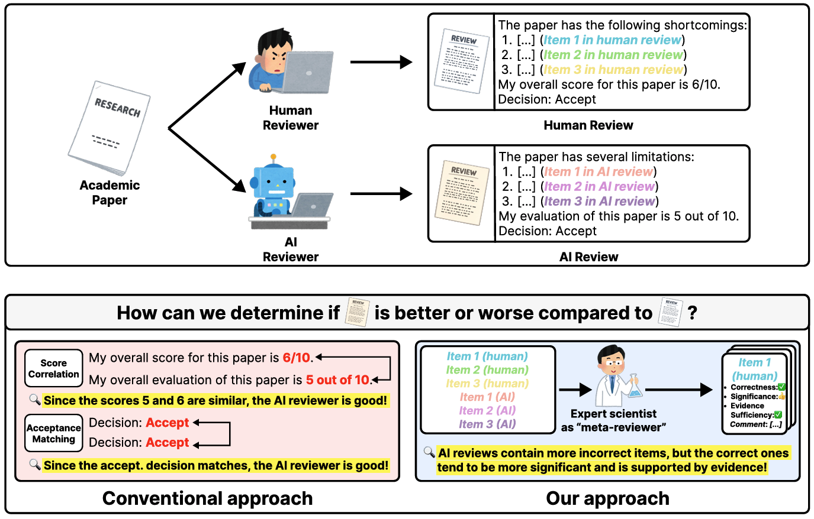
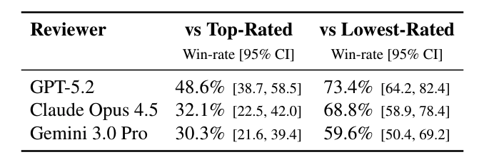
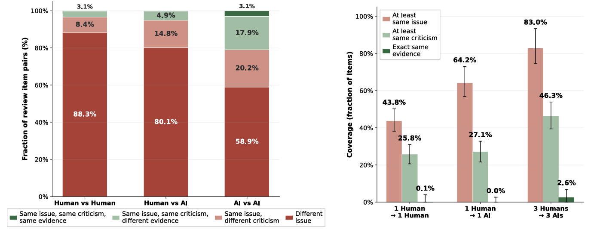
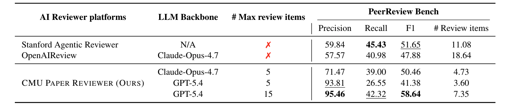

Expert Annotation Study
How 45 expert scientists evaluated AI-generated reviews of Nature-family papers.
In our study, 45 expert scientists meta-reviewed AI-generated reviews and the papers' official human reviewers for 82 Nature-family papers in terms of the correctness, significance, and sufficiency of evidence of the criticism.

Earlier work judged AI reviews with shallow proxies (e.g. overall score correlation and accept/reject agreement) which never reveal whether an AI's criticisms are actually useful or whether they overlap with what humans flagged. We instead had expert scientists judge every individual review item.

Judged on the full review, GPT-5.2 matches or exceeds the top-rated human reviewer on 48.6% of papers, and the lowest-rated human on 73.4%. Claude Opus 4.5 (32.1%) and Gemini 3 Pro (30.3%) trail against the top human.
| Reviewer | Correctness % | Significance (0–2) | Evidence % | Items |
|---|---|---|---|---|
| Top-Rated Human | 92.3 | 1.39 | 92.2 | 1,139 |
| Lowest-Rated Human | 79.1 | 1.30 | 89.7 | 833 |
| GPT-5.2 | 86.2 | 1.61 | 97.1 | 442 |
| Claude Opus 4.5 | 83.7 | 1.53 | 96.5 | 475 |
| Gemini 3 Pro | 81.9 | 1.56 | 89.5 | 460 |
Per review item, AI reviewers raise more significant issues than even the top-rated human (significance 1.5–1.6 vs 1.39, p<.001) but are factually correct slightly less often (82–86% vs 92%). Their evidence quality is on par with or above humans. Point estimates shown; 95% CIs and effect sizes are in the paper.

AI reviewers overlap with one another far more than humans do. A panel of three AI reviewers covers most of the human reviewers' targets, but only about half of their specific criticisms — broadening coverage without fully reproducing human judgment.

On PeerReview Bench (78 papers), CMU Paper Reviewer reaches higher precision than the other public platforms — 95.5% vs 59.8% (Stanford Agentic Reviewer) and 57.6% (OpenAIReview) — while producing fewer review items (4.7 vs 11.1 and 18.6). Allowed up to 15 items, its best configuration reaches the highest F1 (58.6%).
Together: today's AI reviewers raise more issues and rival human reviewers on many papers, but their lower correctness and field-context gaps mean they are best used to augment, not replace expert review. Read the full study in our paper.